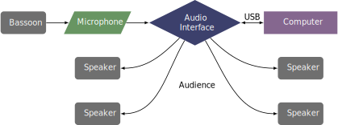

This piece was originally composed in 1995 for Wendy Holdaway and was revised in 2020. The piece can be obtained by contacting the composer at his website.
This piece requires a single microphone for capturing the bassoon sound. The patch is designed to run with four speakers, with two behind the audience, but it can also run in stereo mode with two speakers. A separate electronics performer is required for this piece. However, the controls could be mapped to a MIDI pedal and controlled by the soloist. This would require editing the patch and mapping the performer's MIDI messages to various places within the patch. The controller would be required to send six different MIDI messages. While possible, it is probably best to have a separate person press the keys on the keyboard. That performer needs to hold down the "Z" key and the "C" key and push the "V" key and space bar at various times throughout the piece. They can also control the levels of the patch in real time, something that a solo setup probably could not do easily.
A possible setup for this piece is shown below. 
The patch for Mask is shown in the screenshot section. From this point, whoever is operating the patch should press the button marked GO with whichever setup they are using, either two channels or four. Then the icon with the speaker should be pressed to turn on the audio system. The input levels are set in the section marked IN, and the various levels can be changed with the sliders in the OUTPUTS section. To begin, simply press the space bar. The letters "Z," "C," and "V" will all be outlined in a red box when they are pushed. The patch will record the input at different times and the soundwave can be seen in the BUFFER section. There is a timer that begins to help the performer keep their place in the score during performance.
The technical aspects of this piece are not that difficult; in fact, most of the piece fits within one pentatonic scale. There are many syncopated rhythms, but the overall tempo is very manageable. If a separate electronics performer is used, there is little difficulty added for the bassoonist. If the performer maps the controls to MIDI pedals, the electronics are still not very difficult. This piece is certainly an option for undergraduate students, especially if someone else is controlling the electronics.
As noted previously, this piece closely fits in a pentatonic scale. Toward the end there is more dissonance, but certainly not in the realm of atonality. The processed sound mostly explores spatialization and granulation---where the sound is broken into many tiny pieces. This piece should be accessible to all audiences.
©2025 by Benjamin Bradshaw
Logo ©2025 by Hannah Bradshaw